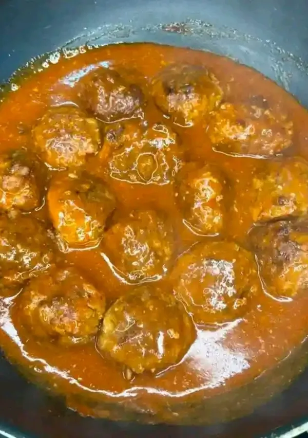

Home
Fried Meatball Stew

Description
Meatball stew is a very easy and delicious dish to prepare at home. I always and mostly used minced meat to prepare samosas, little did I know something more delicious could be extracted from it to accompany my dishes. My favourite accompaniment is when eating the fried meatball stew with spaghetti.
Ingredients
- 200 g Minced meat
- 2 tbsp Coriander (Chopped)
- 1/2 Eggs
- 1 tbspPaprika
- 1/2 tbsp Blakc pepper
- 1 tsp Curry Powder
- 1 tbsp Soy sauce
- 2 tbsp Tomato paste
- 1/2 Onion (chopped)
- 1 clove Garlic(minced)
- 1/2 tsp Salt
- 2 tbsp Cooking oil
Steps
- Mix minced meat, coriander, egg, paprika, black pepper, curry powder, and kfc-crispy-chicken-kenyan-style-recipe-recipe-main-photo
- Shape into small balls.
- Heat oil in a pan, add meatballs, and wet fry until browned and juicy.
- Add onion and garlic, saute until soft.
- Stir in tomato paste and soy sauce, cook for 2 min.
- Add splash of water if needed, simmer meatballs in sauce for 5 min.
- Serve over boiled spaghetti/rice.